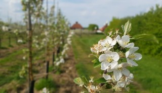
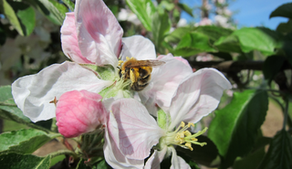

FruitWatch is a national citizen science project recording the flowering dates of apple (and crab-apple), apricot, cherry, peach, pear and plum trees. Every sighting helps researchers understand how fruit tree phenology is shifting with the climate — and what that means for pollinators and harvests.


Fruit trees are flowering earlier than they did a generation ago. That shift affects synchrony with insect pollinators, increases the risk of frost damage, and ultimately impacts how much (and what quality) fruit ends up on the tree. Recording exactly when and where trees bloom — across thousands of gardens, orchards and public spaces — is a vital way to track this at a national scale.
Record a tree in your garden, a local orchard, or one you pass on a walk. Every observation adds to the national picture.
One short form: species, location and bloom stage. No account needed, no specialist knowledge required.
Data underpins peer-reviewed work on phenology and pollination, and is shared openly with the research community.
It takes less time to record than it does to read this sentence.
Submit a sighting →